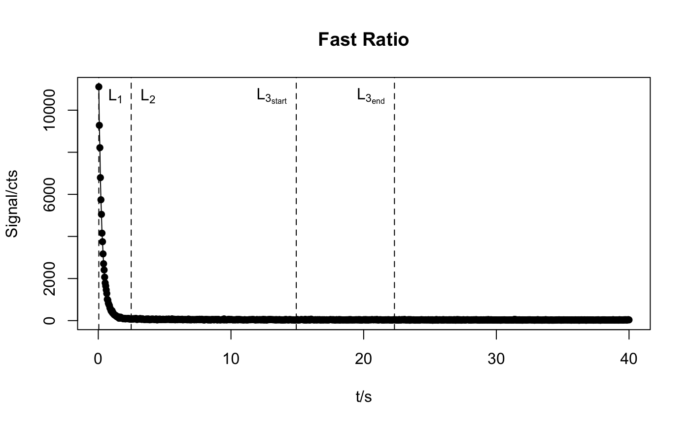

calc_FastRatio.RdFunction to calculate the fast ratio of quartz CW-OSL single grain or single aliquot curves after Durcan & Duller (2011).
calc_FastRatio(object, stimulation.power = 30.6, wavelength = 470, sigmaF = 2.6e-17, sigmaM = 4.28e-18, Ch_L1 = 1, Ch_L2 = NULL, Ch_L3 = NULL, x = 1, x2 = 0.1, dead.channels = c(0, 0), fitCW.sigma = FALSE, fitCW.curve = FALSE, plot = TRUE, ...)
| object | RLum.Analysis, RLum.Data.Curve or data.frame (required): x, y data of measured values (time and counts). |
|---|---|
| stimulation.power | numeric (with default): Stimulation power in mW/cm^2 |
| wavelength | numeric (with default): Stimulation wavelength in nm |
| sigmaF | numeric (with default): Photoionisation cross-section (cm^2) of the fast component. Default value after Durcan & Duller (2011). |
| sigmaM | numeric (with default): Photoionisation cross-section (cm^2) of the medium component. Default value after Durcan & Duller (2011). |
| Ch_L1 | numeric (with default): An integer specifying the channel for L1. |
| Ch_L2 | numeric (optional): An integer specifying the channel for L2. |
| Ch_L3 | numeric (optional):
A vector of length 2 with integer values specifying the start and end channels for L3
(e.g., |
| x | numeric (with default): % of signal remaining from the fast component. Used to define the location of L2 and L3 (start). |
| x2 | numeric (with default): % of signal remaining from the medium component. Used to define the location of L3 (end). |
| dead.channels | numeric (with default):
Vector of length 2 in the form of |
| fitCW.sigma | logical (optional):
fit CW-OSL curve using fit_CWCurve to calculate |
| fitCW.curve | logical (optional): fit CW-OSL curve using fit_CWCurve and derive the counts of L2 and L3 from the fitted OSL curve (experimental). |
| plot | logical (with default):
plot output ( |
| ... | available options: |
Returns a plot (optional) and an S4 object of type RLum.Results.
The slot data contains a list with the following elements:
data.frame summary of all relevant results
the original input data
RLum.Results object if either fitCW.sigma or fitCW.curve is TRUE
list of used arguments
[call] the function call
This function follows the equations of Durcan & Duller (2011). The energy
required to reduce the fast and medium quartz OSL components to x and
x2 % respectively using eq. 3 to determine channels L2 and L3 (start
and end). The fast ratio is then calculated from: \((L1-L3)/(L2-L3)\).
0.1.1 (2018-03-09 09:04:33)
King, G.E., Durcan, J., Burow, C. (2019). calc_FastRatio(): Calculate the Fast Ratio for CW-OSL curves. Function version 0.1.1. In: Kreutzer, S., Burow, C., Dietze, M., Fuchs, M.C., Schmidt, C., Fischer, M., Friedrich, J. (2019). Luminescence: Comprehensive Luminescence Dating Data Analysis. R package version 0.9.0.103. https://CRAN.R-project.org/package=Luminescence
Durcan, J.A. & Duller, G.A.T., 2011. The fast ratio: A rapid measure for testing the dominance of the fast component in the initial OSL signal from quartz. Radiation Measurements 46, 1065-1072.
Madsen, A.T., Duller, G.A.T., Donnelly, J.P., Roberts, H.M. & Wintle, A.G., 2009. A chronology of hurricane landfalls at Little Sippewissett Marsh, Massachusetts, USA, using optical dating. Geomorphology 109, 36-45.
Further reading
Steffen, D., Preusser, F. & Schlunegger, 2009. OSL quartz age underestimation due to unstable signal components. Quaternary Geochronology 4, 353-362.
# load example CW-OSL curve data("ExampleData.CW_OSL_Curve") # calculate the fast ratio w/o further adjustments res <- calc_FastRatio(ExampleData.CW_OSL_Curve)#> #> [calc_FastRatio()] #> #> ------------------------------- #> Fast Ratio : 405.12 #> ˪ Absolute error : 119.74 #> ˪ Relative error (%) : 29.56 #> Channels : 1000 #> Channel width (s) : 0.04 #> Dead channels start : 0 #> Dead channels end : 0 #> Sigma Fast : 2.6e-17 #> Sigma Medium : 4.3e-18 #> I0 : 7.2e+16 #> Stim. power (mW/cm^2) : 30.60 #> Wavelength (nm) : 470.00 #> - #> Time L1 (s) : 0.00 #> Time L2 (s) : 2.45 #> Time L3 start (s) : 14.86 #> Time L3 end (s) : 22.29 #> - #> Channel L1 : 1 #> Channel L2 : 62 #> Channel L3 start : 373 #> Channel L3 end : 558 #> - #> Counts L1 : 11111 #> Counts L2 : 65 #> Counts L3 : 37.67 #> ------------------------------- #>#> fast.ratio fast.ratio.se fast.ratio.rse channels channel.width #> 1 405.122 119.7442 29.55756 1000 0.04 #> dead.channels.start dead.channels.end sigmaF sigmaM I0 #> 1 0 0 2.6e-17 4.28e-18 7.240067e+16 #> stimulation.power wavelength t_L1 t_L2 t_L3_start t_L3_end Ch_L1 Ch_L2 #> 1 30.6 470 0 2.446413 14.86139 22.29208 1 62 #> Ch_L3_start Ch_L3_end Cts_L1 Cts_L2 Cts_L3 #> 1 373 558 11111 65 37.66667